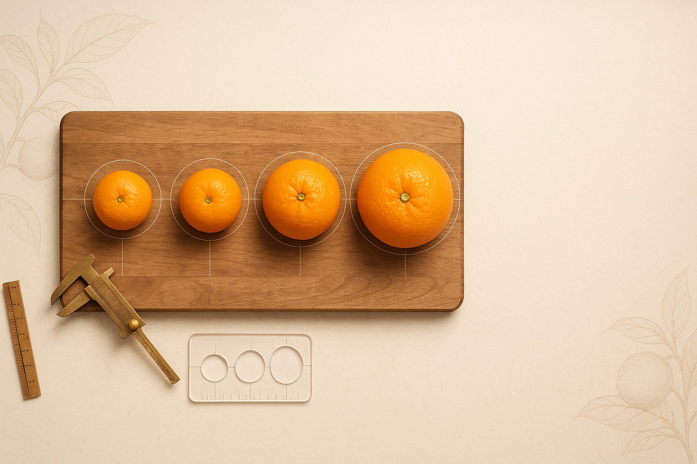

規格分級說明
選擇最適合您的尺寸
了解椪柑和茂谷柑的規格分級標準，包含 23A、25A、27A、30A 的直徑範圍、均重和外觀特徵，讓您輕鬆選購。
🍊 規格分級說明
了解椪柑和茂谷柑的規格分級標準，選擇最適合您的尺寸
重要提醒
大顆不一定最甜！ 規格大小主要影響外觀和口感，甜度取決於栽培方式、產地和成熟度。建議依照用途選擇：送禮選大顆（27A/30A），自用選中小顆（23A/25A）更經濟實惠。
| 規格 | 直徑範圍 | 單顆均重 | 特色說明 |
|---|---|---|---|
23A |
6.5 – 7.0 cm |
約 150-180g |
入門人氣款，超值體驗 適合家庭日常食用 |
25A |
7.0 – 7.5 cm |
約 180-220g |
經典送禮，最受歡迎 家庭/伴手禮首選 |
27A |
7.5 – 8.0 cm |
約 220-270g |
精選大果，送禮首選 送禮有面子 |
30A |
8.0 – 8.5 cm |
約 270-330g |
限量尊榮，稀缺精選 高端禮盒專用 |
📏 尺寸參考對照
以下提供常見物品對照，幫助您更直觀地了解各規格大小
23A 規格
直徑約 6.5-7.0cm
約檸檬大小
25A 規格
直徑約 7.0-7.5cm
約手機寬度
27A 規格
直徑約 7.5-8.0cm
約棒球大小
30A 規格
直徑約 8.0-8.5cm
約成人手掌寬度
💡 選購建議
家庭自用
建議選擇 23A 或 25A，經濟實惠，品質優良，適合日常食用。
送禮推薦
建議選擇 27A 或 30A，外觀大方體面，適合送禮或重要場合。
CP值考量
25A 規格最受歡迎，價格適中，大小適宜，送禮自用兩相宜。
品質保證
所有規格均經嚴格篩選，品質一致，只有大小差異，甜度相近。